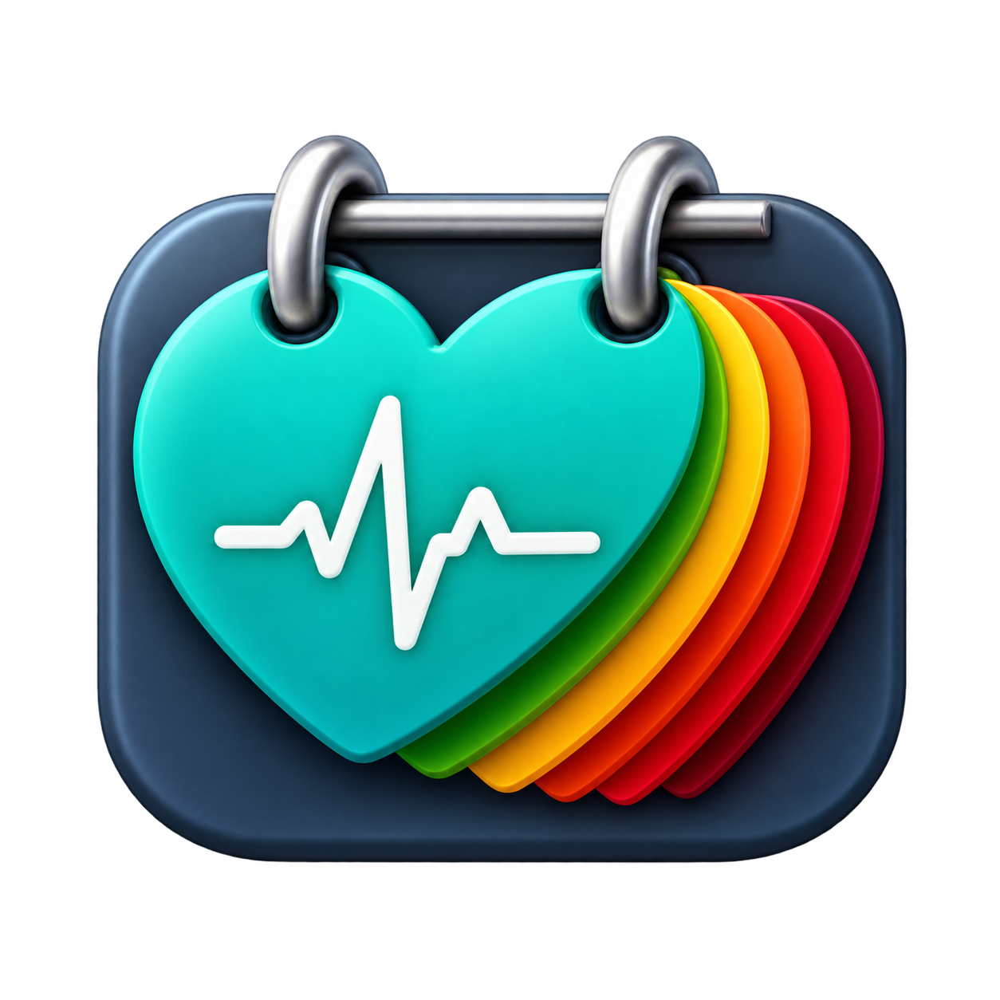

Быстрый ввод
SYS, DIA и пульс сохраняются в журнал вместе с датой, временем и выбранной рукой.
Простой дневник давления и пульса: история измерений, цветовая индикация, фильтры, экспорт в PDF/CSV и резервные копии.

SYS, DIA и пульс сохраняются в журнал вместе с датой, временем и выбранной рукой.
Просмотр измерений за день, неделю, месяц или произвольный период, а также редактирование записей.
Журнал хранится локально на устройстве. Регистрация и создание аккаунта не требуются.
Создание и восстановление резервной копии в файле по инициативе пользователя.
Экспорт журнала в PDF и CSV без медицинских интерпретаций и лишней аналитики.
Светлая, тёмная и системная темы, а также несколько вариантов оформления интерфейса.
Напишите на support@vkarma.ru. Буду благодарен за обратную связь и предложения.
Цветовая оценка артериального давления носит информационный характер, не является диагнозом и не заменяет консультацию врача. Для измерений пользователя младше 18 лет взрослая цветовая классификация не применяется.